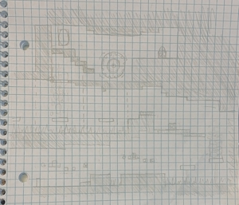
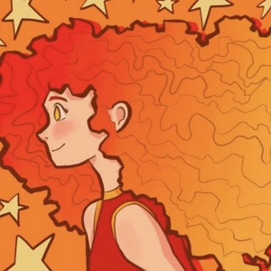
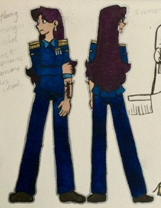

Overview
Purpose
This website will act as a main page for my company. The page itself will efficiently introduce the company to any visitors, including current ongoing game projects, inform the visitor about past projects and accomplishments, and hype any future projects. On the side pages, the site will go into further detail about completed game projects and what the company is currently working on, so the visitors know our future plans. The purpose of the site is to inform visitors about our company, promote our products, and hype future products.
Audience
The target audience of this website is someone who plays videogames on their computer. The ideal audience would generally be male and be a child or teenager. The audience would be someone invested in the games we create and someone who plays platformers, puzzle games and adventure games. We also target the older teens and young adults who are interested in games and encourage them to donate to the developers if they wish. Our ideal audience would come to our site to find other games created by us and find out more about us as the creators.
Branding
Website Logo
Style Guide
Color Palette
Palette URL: https://coolors.co/00cccc-5094a5-447a88-f3f3f6| Primary | Secondary | Accent 1 | Accent 2 |
|---|---|---|---|
| [#447A88] | [#5094A5] | [#00CCCC] | [#f3f3f6] |
Typography
Heading Font: PT Serif
The PT Serif font has a serif, which makes it great for a header. The varying length throughout different parts of the letter makes it appear classy, while still being relaxed enough to make the website seem casual.
Paragraph Font: Source Sans Pro
This sans serif font has a nice, relaxed feel which I feel the visitors will appreciate. The website will be straight to the point, while the font makes it seem cozy enough to help relax the site as a whole.
Normal paragraph example
The best Whitewater Rafting in Colorado, White Water Rafting Company offers rafting on the Colorado and Roaring Fork Rivers in Glenwood Springs. Since 1974, we have been family owned and operated, rafting the Shoshone section of Glenwood Canyon and beyond.
Colored paragraph example
Trips vary from mild and great for families, to trips exclusively for physically fit and experienced rafters. No matter what type of river adventures you are seeking, White Water Rafting Company can make it happen for you.
Navigation
Site Map
Content
About StoryGate Studios
The Website
People will come to my website to learn how to contact the developers and staff of StoryGate Studios, find their social, and to learn more about other projects the studio is doing. If someone is a fan of one of the games we create and wants to find more about other games we have created, they can see them all detailed here. Aside from information about the games, visitors can learn more about the developers themselves.
StoryGate Studios and the Staff
The main page will first and foremost introduce the company. We would let the visitor know that we are an indie game development company, briefly mention the two game projects we are working on, and introduce the main staff behind the scenes. Brief statements about myself and my main staff will be included, as well as what we do for the company and where to find our social media. For myself, I would mention that I am the lead dev of all of the projects currently, that I intend to make all of the art for the games, and that I started the company. As some of my staff may not be entirely comfortable having a lot mentioned about them, they may only be mentioned briefly as Devs or Alpha Testers for the game and my own social media (instagram, youtube) will be linked as well as the social media for the company (instagram, itch.io, newgrounds). Unless my staff are alright with it, their social media will not be included.
Website Purpose
The website will primarily serve to inform the visitors, hype up the games, and direct them to other places where they can support the development. Any questions regarding what the game ideas are and where they are in development should be answered, as well as questions about who the developers are and how to support them. As this is the main page about this company created by this company, visitors would come here to find the most accurate and up-to-date information about the company.
Images for the Home page
- 
- 
Game Projects
Platformer Game
The two games that the website will discuss are the two game projects that the team are currently working on. This first is a simple platformer with an emphasis on exploration. Players can explore through worlds, solving small puzzles and discovering more about the world around them. The game is in development presently, and once the mechanics are all worked out, art and music will be added before the main beta release. The page will also include images with visual concepts about the game and tip off what the game might look like later in development.
Story-Based Game
The second game is a story-based game that will have much less freedom in gameplay than the previous game but will present a compelling story with multiple possible endings. The player plays as a cyborg who had their memory chip wiped while infiltrating an alien military base. You weave through guards and search for the main weapons control, all while learning more about your past and figuring out who it was that mysteriously wiped your memory disks… As you go, you discover that this military base was planning to launching an attack on your home planet and starting an all-out war, which you must attempt to prevent with the aid of some allies from your planet. This game is still in the concepts stage and will likely be developed after the previous platformer game is completed. As the game had not been developed too far, visual concepts may be limited, but some may still be included to give an idea of the ideas that the staff have been throwing around.
Images for the Page 2

- 
Forums
Forums
For the third form page of the website, visitors can send messages directly to the staff at the studio and talk with other fans and visitors of the website. They can share ideas and comment about the company and games, or otherwise ask or tell the company whatever they wish. They can simply enter a username and comment to share their thoughts that will reach the staff directly. These messages will be added to the website and anyone who visits the page can see them. The staff and other visitors can then respond to the messages as they so please.
Images for the Page 3
Wireframes
Create three wireframes for your site. One for each page and list them here
Home
Game Projects
Forums
The boxes depicted are comments that people can add to the site. It displays the person's chosen username and meessage.